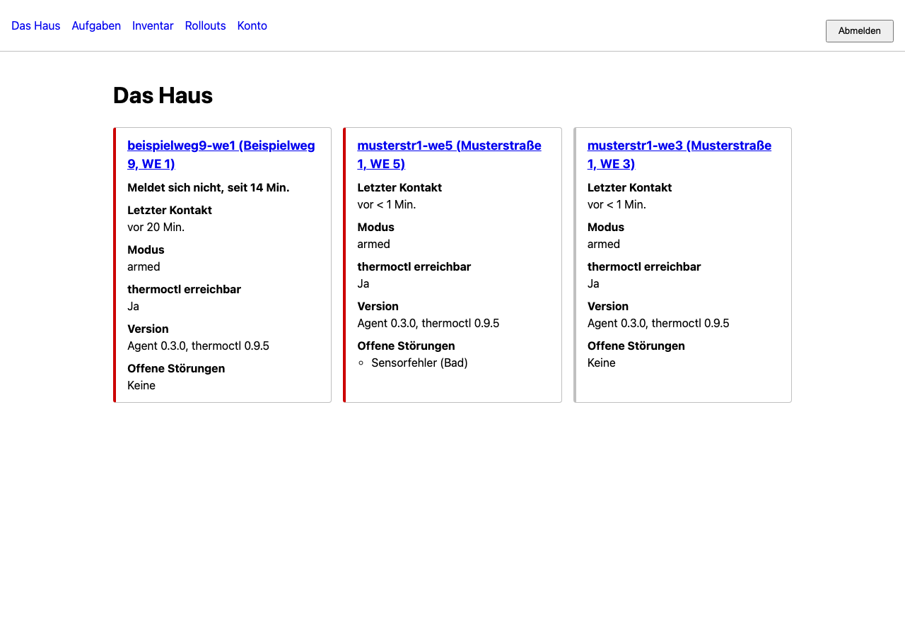

Der Überblick über alle Wohnungen – ohne die zweite Steuerung zu werden
thermoctl-fleet ist ein kleiner Cloud-Dienst für Vermieter mit mehreren thermoctl-Installationen: er empfängt von jeder Wohnung einen Herzschlag mit Gesundheitsdaten, sammelt Störungen, schlägt Alarm beim Ausbleiben einer Meldung – und kann einer Wohnung einen kurzen, geschlossenen Katalog von Wartungsbefehlen schicken.

Was das hier nicht ist
Diese drei Sätze stehen nicht nebenbei im Dokument – sie sind in der Spezifikation (Abschnitte 1 und 6) bewusst und unwiderruflich festgelegt:
Keine zweite Steuerung. Sollwerte, Zeitpläne, Frostschutz und Scharfschaltung bleiben in der Wohnung. Die Cloud kann sie nicht ändern – nicht „derzeit nicht geplant“, sondern: den Befehl dafür gibt es schlicht nicht, und er wird nicht ohne ausdrückliche Freigabe des Projektinhabers nachgerüstet.
Kein Datensammler. Raumtemperaturen, Sollwerte, Zeitpläne, Abwesenheitszeiten sowie Mieternamen und Kontaktdaten werden nicht übertragen (Abschnitt 6). Was der Betrieb braucht, sind Gesundheitsdaten – kein Verhaltensprofil.
Kein Ersatz für die Wohnungsansicht. Der Mieter sieht die Cloud nie. Er bedient weiterhin ausschließlich seine eigene thermoctl-Instanz.
Die Begründung dahinter: ein kompromittierter Fleet-Server, der nur zusehen kann, ist ein Datenschutzvorfall. Einer, der auch schalten kann, sind zwölf kalte oder überhitzte Wohnungen gleichzeitig. Diese Reihenfolge lässt sich später nicht umkehren, deshalb steht sie von Anfang an fest.
So funktioniert's
Basisstation vorbereiten
Fertiges Image schreiben, Registrierungscode auf die Boot-Partition legen – kein individuelles Betriebssystem, keine offene WLAN-Phase.
Einstecken & bestätigen
Das Gerät meldet sich mit einem Verifizierungscode; erst die Bestätigung in der UI gibt die Konfiguration frei.
Herzschlag & Störungen
Alle 120 Sekunden ein Lebenszeichen mit Gesundheitsdaten; Alarm, wenn es ausbleibt – nicht, wenn es ankommt.
Wartung nach Bedarf
Ein kurzer, geschlossener Befehlskatalog mit Id, Ablaufzeit und lokalem Protokoll – ausgeführt und geprüft in der Wohnung selbst.
Wie die Teile zusammenspielen
Vier Bausteine, jeder mit genau einer Aufgabe. Die Wohnung spricht die Cloud nur über den Agenten an – nie direkt, und nur nach außen (keine Portweiterleitung im Mieter-Router nötig). Diese Übersicht ist bewusst vereinfacht; das vollständige interaktive Architekturdiagramm zeigt jede Komponente und jeden Ablauf im Detail.
Die Pfeilrichtung ist bewusst asymmetrisch: die Wohnung ruft die Cloud per gewöhnlichem
POST (Heartbeat, Ereignisse, Befehlsergebnisse); die Cloud selbst öffnet
nie eine Verbindung zur Wohnung. Befehle laufen stattdessen über einen offen gehaltenen
GET /v1/commands (Server-Sent Events) – die Wohnung hält die Verbindung,
nicht umgekehrt. Kein Port muss im Router des Mieters freigegeben werden.
Alle Zusammenhänge, Zonen und Abläufe im Detail:
vollständiges interaktives Diagramm.
Der Lebenszyklus einer Wohnung
Von der Einrichtung des Fleet-Servers bis zur Außerbetriebnahme einer Basisstation –
die Zustände entsprechen wörtlich denen aus der Spezifikation (Abschnitt 20.1,
ApartmentState/DeviceLifecycle) und dem Code in
protocol/inventory.py.
Einstecken & Enrollment
Gerät meldet sich, Bestätigung in der UI.
reported → in_service
Ablauf im Diagramm →
Gerätetausch
Ersatzgerät aus dem Regal, Backup-Restore.
faulty/in_storage → in_service
Ablauf im Diagramm →
Sicherheitsmodell in Kürze
Sechs Grundsätze, die nicht verhandelbar sind (Details: Sicherheit):
Geschlossener Befehlskatalog
Die Cloud kann einer Wohnung nur das schicken, was in einer kurzen, festen Liste steht. Eine Erweiterung ist niemals „nur eine kleine Ergänzung“.
Image-Quellen fest im Agenten
Die erlaubten Registrierungen stehen als Konstante im Agenten, nicht in der Cloud. Die Cloud nennt nur Version und Digest – nie die Quelle. Kein Digest, kein Start.
Keine privaten Schlüssel in der Cloud
WireGuard- und Geräteschlüsselpaare entstehen auf der Basisstation und verlassen sie nie. Die Cloud sieht ausschließlich öffentliche Schlüssel.
Keine Mieterdaten im Klartext
Betriebsdaten-Backups werden auf dem Gerät verschlüsselt, bevor sie hochgeladen werden. Die Cloud speichert nur den opaken Block, nie den Schlüssel.
Der Agent ist die Sicherheitsgrenze
Jede Prüfung, ob ein Befehl ausgeführt wird, sitzt im Agenten – selbst wenn die Cloud etwas anderes sagt. Eine kompromittierte Cloud kann keine Sitzung öffnen, die der Agent lokal verweigert.
Der Watchdog kennt kein Netz
Er tauscht nur zwischen zwei lokal bereits geprüften Digests – in Go, statisch gebaut, ohne eine einzige Abhängigkeit. Genau deshalb funktioniert er noch, wenn alles andere kaputt ist.
Was der Dienst konkret kann
Heartbeat & Alarm bei Ausbleiben
Jede Wohnung meldet sich alle 120 Sekunden. Der eigentliche Wert liegt nicht im Empfang, sondern im Alarm, wenn drei Meldungen hintereinander fehlen.
Störungen mit Quittierung
Die sechs thermoctl-Störungsarten laufen in der Cloud zusammen. Eine Quittierung gilt nur für das aktuelle Auftreten – tritt die Störung erneut auf, erscheint sie wieder.
Batterie & Signal pro Gerät
Geräte-Id, Batteriestand und Signalqualität – ohne Gerätenamen (die Raumnamen enthalten können) und ohne Messwerte.
Geschlossener Befehlskatalog
report_now, fetch_logs, backup_now,
agent_restart, diagnostic_bundle – mit Id, Ablaufzeit und
lokalem Protokoll in der Wohnung selbst.
Verschlüsselte Backups & Restore
Betriebsdaten werden auf dem Gerät verschlüsselt. Der Entschlüsselungsschlüssel wird im Browser lokal verschlüsselt und nie im Klartext an die Cloud übertragen.
Gestaffelte Rollouts
Updates laufen über Soll-Zustand, nie per Fernsteuerung einzelner Befehle – kontrolliert, eine Wohnung nach der anderen, mit Rückfallpfad.
Mieterwechsel
Eine ausdrückliche UI-Aktion mit Pflichtgrund rotiert den Gerätetoken und löscht die Verlaufsdaten der vorherigen Mietzeit – verschlüsselte Backups bleiben, unter eigener Aufbewahrungsfrist.
Anmeldung mit TOTP & Passkey
Zwei-Faktor-Anmeldung der Web-Oberfläche: TOTP-Secrets liegen verschlüsselt mit einem Schlüssel aus der Umgebung, Passkeys (WebAuthn) als zweiter Faktor. Aus eigenen, bekannten Netzen genügt optional ein Passkey allein, ohne Passwort.